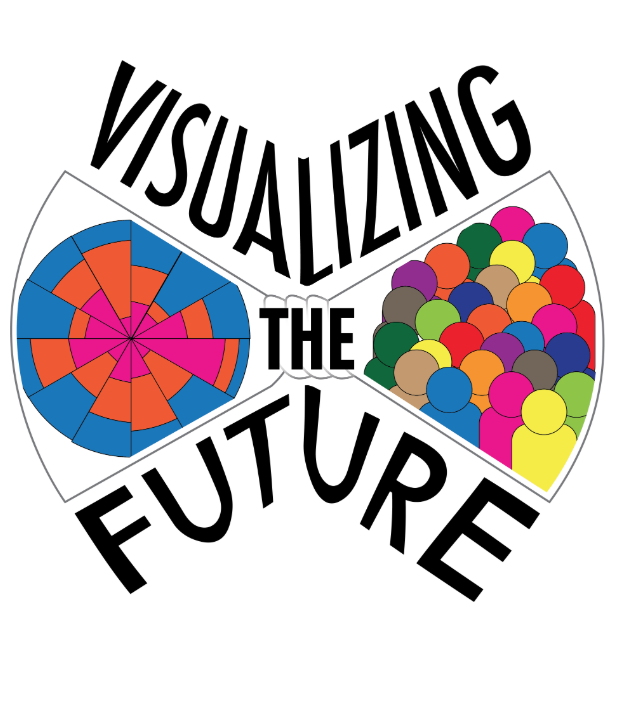

What does a design process look like that acknowledges, from the beginning, that all digital platforms are ephemeral? What is the core conceptual labor at work in a digital repository, how might anticipating the broader lifespan of those ideas and labor help guide a development process? This case study follows the development of a repository of exemplary data visualization resources for library-based instruction.
Visualizing the Future is an IMLS National Forum grant project to develop a literacy-based instructional and research agenda for library and information professionals with the aim to create a community of praxis focused on data visualization. As part of the National Forum, several fellows began working on building resources to support librarians in developing data visualization pedagogy. The Examples working group elected to develop a digital repository to host exemplary data visualizations and datasets for instructor use across a variety of contexts.